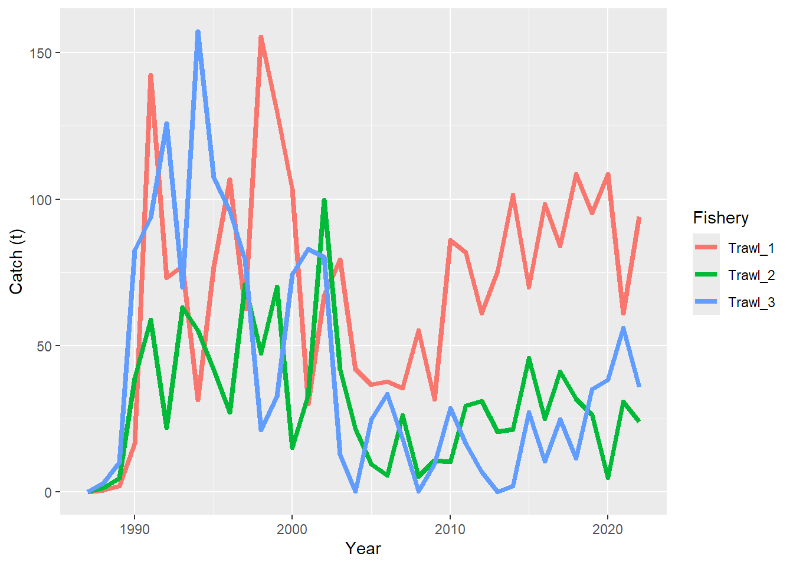
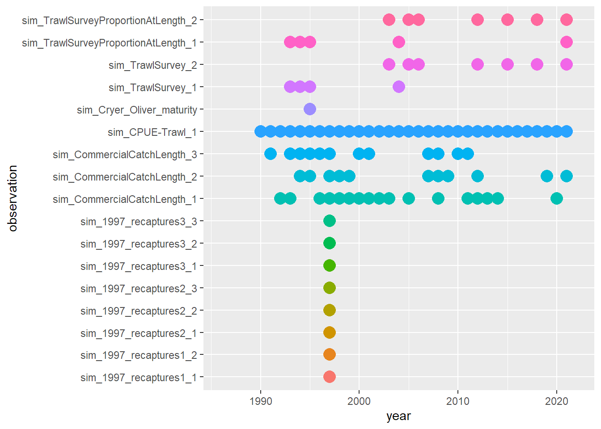

Chapter 2 Model structure
2.1 Read in necessary R libraries
library(r4Casal2)
library(Casal2)
library(knitr)
library(ggplot2)
library(dplyr)
library(reshape2)cas2_mpd = extract.mpd(file = 'estimate_betadiff.log', path = csl_dir)
config_summary = summarise_config(config_file = 'config_betadiff.csl2', config_dir = csl_dir)2.2 Input catches
ggplot(config_summary$catch_df, aes(x = year, y = catch, col = fishery)) +
geom_line(size = 1.5) +
labs(x = "Year", y = "Catch (t)", col = "Fishery")

(#fig:plot_input_catches)Catch by fishery over time
2.3 Input Observations
ggplot(config_summary$obs_year_df, aes(x = year, y = observation, col = observation, size = active)) +
geom_point() +
guides(colour = "none", size = "none")## Warning: Removed 525 rows containing missing values (`geom_point()`).

(#fig:plot_input_observations)Years in which observations are calculated
2.4 Annual cycle
kable(x = config_summary$time_step_df,format = 'html', tab.attr = "style='width:100%;'")| time_step | processes |
|---|---|
| Oct-Jan | growth (growth), mortality (mortality_instantaneous), tag_1997_1_male (tagging), tag_1997_1_female (tagging) |
| Feb-Apr | Recruit_BH (recruitment_beverton_holt), mortality (mortality_instantaneous), tag_1996_2_male (tagging), tag_1996_2_female (tagging), SSB (derived-quantity 0.5) |
| May-Sep | mortality (mortality_instantaneous), tag_1996_3_male (tagging), tag_1996_3_female (tagging) |
2.5 The Partition
kable(x = config_summary$full_category_df,format = 'html', tab.attr = "style='width:100%;'")| Category | GrowthIncrement | LengthWeight | value |
|---|---|---|---|
| untagged.male | male_growth (basic) | allometric_male (basic) | normal |
| t1997_1.male | male_growth (basic) | allometric_male (basic) | normal |
| t1996_2.male | male_growth (basic) | allometric_male (basic) | normal |
| t1996_3.male | male_growth (basic) | allometric_male (basic) | normal |
| untagged.female | female_growth (basic) | allometric_female (basic) | normal |
| t1997_1.female | female_growth (basic) | allometric_female (basic) | normal |
| t1996_2.female | female_growth (basic) | allometric_female (basic) | normal |
| t1996_3.female | female_growth (basic) | allometric_female (basic) | normal |
2.6 Estimated parameters
kable(x = config_summary$estimate_df,format = 'html', tab.attr = "style='width:100%;'")| label | same | prior | lower_bound | upper_bound |
|---|---|---|---|---|
| B0 |
|
uniform_log | 500 | 20000 |
| growth_min_sigma |
|
uniform | 1 | 10 |
| YCS |
|
lognormal | 0.01 0.01 0.01 0.01 0.01 0.01 0.01 0.01 0.01 0.01 0.01 0.01 0.01 0.01 0.01 0.01 0.01 0.01 0.01 0.01 0.01 0.01 0.01 0.01 0.01 0.01 0.01 0.01 0.01 0.01 0.01 0.01 0.01 0.01 0.01 0.01 0.01 | 100 100 100 100 100 100 100 100 100 100 100 100 100 100 100 100 100 100 100 100 100 100 100 100 100 100 100 100 100 100 100 100 100 100 100 100 100 |
| maturity_a50 |
|
uniform | 10 | 60 |
| maturity_ato95 |
|
uniform | 1 | 50 |
| FishingSel_1_a50 |
|
uniform | 25 | 55 |
| FishingSel_1_ato95 |
|
uniform | 5 | 25 |
| FishingSel_1_male_alpha |
|
uniform | 0.1 | 10 |
| FishingSel_2_a50 |
|
uniform | 25 | 55 |
| FishingSel_2_ato95 |
|
uniform | 5 | 25 |
| FishingSel_2_male_alpha |
|
uniform | 0.1 | 10 |
| TrawlSurveySel_1_a50 |
|
uniform | 5 | 60 |
| TrawlSurveySel_1_ato95 |
|
uniform | 1 | 50 |
| TrawlSurveySel_1_male_alpha |
|
uniform | 0.1 | 10 |
| TrawlSurveySel_2_a50 |
|
uniform | 5 | 60 |
| TrawlSurveySel_2_ato95 |
|
uniform | 1 | 50 |
| TrawlSurveySel_2_male_alpha |
|
uniform | 0.1 | 10 |
| g_alpha_male |
|
uniform | 1 | 30 |
| g_beta_male |
|
uniform | 0.5 | 20 |
| g_alpha_female |
|
uniform | 1 | 30 |
| g_beta_female |
|
uniform | 0 | 20 |